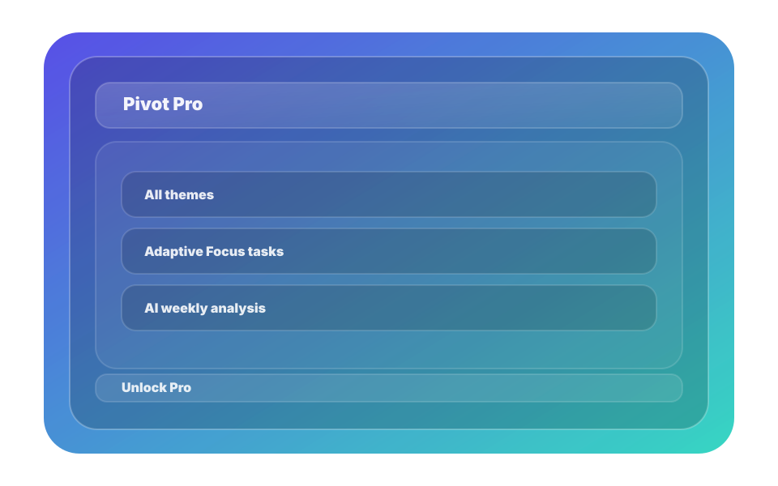

Your weekly journal
Journal entries are organized across Focus, Vent, and Move—so you can notice patterns without extra effort.

Browse by day (or zoom out)
Each day shows the activity you saved from Focus, Vent, and Move. When you expand a day, you can review what you did and what you wrote.
- Focus entries include the task and a focused vs scheduled view.
- Vent entries include whether a reflection exists.
- Move entries show your walk outcome and reflection.
This week (summary)
Pivot can generate a compact “This week” snapshot based on your completed activities.
- Counts your Focus tasks and groups them by type.
- Shows how many Vent and Move entries you completed.
- Sets the stage for Pro’s weekly analysis.
Pro’s AI Analysis card
With Pro enabled, Pivot can create a short weekly summary using your on-device data from Focus, Vent, and Move.
If you’re not on Pro, the card encourages you to complete sessions this week and offers a Pro upgrade path for on-device AI reflection.
FAQ
Journal questions.
Download Pivot
Start tracking your Focus, Vent, and Move—then reflect in one place.